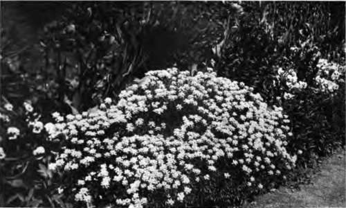

Chapter XIII. Shrubs In The Flower Garden
Description
This section is from the book "Flower Gardening", by H. S. Adams. Also available from Amazon: Flower gardening.
Chapter XIII. Shrubs In The Flower Garden
Most of the old-time £ower gardens of the northeastern part of the United States had at least a shrub or two—with others so near as to give them an air of relationship. Flowers were flowers in those days; little time was spent in botanical differentiation of the source.
One such garden scarcely would be discoverable today were it not for the surviving shrubs. Turf-grown paths, with but a ragged remnant of the box that once lined them, are arched with great bush honeysuckles; a double yellow "wallflower" struggles for bare existence in the shade of a rank old "syringa," cinnamon roses run wild and a flowering almond is a mere ghost of its former glory. What few perennials remain are straggling remnants of hardy races that even neglect finds it difficult to kill.
The old idea is every whit as good today. Why look upon shrubs, or trees, as something quite separable from the garden? If only as a background, some of them almost always come into the picture anyway; when shut out of a planting by a circumscribing wall, they arc rarely lost altogether from view. No matter how plainly defined, what it is so pleasant to call the garden is no more all the garden, in the broadest sense, than the section of a city that is built up solid is all of that city. As the city rambles suburban-ward, so the garden spreads and spreads, until the ends thereof are the boundaries of the home site. Shrubs are not the only factors in this garden extension, but the flowering ones are the dominant denotive figures. A shrub in the garden, or by the side of it, a few more near the house and a small border of them in one corner of the grounds— there you have the simplest sort of a garden chain; yet one binding together the parts of a small place. Shrubs, in short, are prime material for the making of the piers of the imaginary garden bridges that every place, whether large or small, needs.
A great English estate, such as Witley Court, the main portion of which stretches out into ten thousand acres, shows how little size has to do with the expression of the thought. May is two-thirds over and the garden of gardens, that the stately mansion looks out upon, is aglow with rhododendrons. But in every direction flowering shrubs are beckoning, as if to remind you that there is more to the garden than that. Whichever way you turn there are links with the garden; some of them bind it to other gardens, and then away again. In one direction you are soon in the woods, but along the broad shaded path are more rhododendrons with other shrubs, and you can see that only a little while ago there had been myriads of bluebells and primroses to perform a like office in a more lowly fashion.
"Combine a May tulip with a perennial rather than with another variety, so as to secure marked form as well as color contrast".
Shrubs are of special value in the hardy garden because of their height, which varies the skyline agreeably and at the same time gives permanence to some of its aspects. In April, when nothing herbaceous, barring possibly the crown imperial, has dared as yet to raise its blossoms, far from the ground, a single forsythia will fairly illumine the garden because it is a flowering shrub standing out boldly against the sky. Then in winter the bare branches of shrubs, above a deadly monotonous level, are a grateful break if they are only brown; more so when they are red, green, yellow or gray, and still more so when bright fruit or evergreen foliage lingers on them.
In the garden proper these are more important considerations than mere wealth of bloom for late spring and early summer, when no end of perennials can be depended upon for flower color. Shrub bloom really grows in importance as it recedes from the garden, unless the latter is given over entirely to this class of plants, which is seldom the case.
Put but one evergreen shrub in the garden, regardless of whether it blooms, and it is immediately seen that here is an indispensable note.
Spring, summer, autumn and winter this note is indispensable. In a formal garden that is not large enough to use evergreen conifers, it is best expressed by box and ilex; though conifers of very small size may be allowed with equal propriety to pass as shrubs. Box is the most beautiful edging and normally is very hardy. As shrubs go, it is expensive; but with five-inch edging at three dollars a hundred and five dollars for fine single specimens about four feet high, the price is not prohibitive. Both the English holly (Ilex a quifolia, var. Hodginsii) and the American holly (I. opaca) may be had in four-foot specimens for about half the price. Clipped California privet of the same size costs five dollars or so for a pyramid or globe; the shrub itself is cheap, but the training has to be paid for.
For less formal or wholly unconventional effects there are more than a dozen evergreen shrubs whose worth in the garden itself does not begin to be appreciated. Foremost among them, because superb bloom is added to strongly effective foliage, are certain rhododendrons and the mountain laurel (Kalmia latifolia). These have thrived in a full exposure; but if the garden has no shaded spot, they are safer when planted where the sun does not beat down on them relentlessly in summer and the force of the winter's winds is broken by protecting trees and shrubs on the North. Moreover, such a situation, perhaps on the edge of the garden, best becomes them. Both require soil made fibrous by peat or leaf mold; also a heavy winter mulch of leaves, to be left on as a mean* of helping to keep the ground moist in summer.
If good stock—fully acclimatized, should it have been imported—is purchased, neither shrub is so difficult as it seems to most who lose them in culture. Generally the losses are due to a lack of common sense. The two big American rhododendrons, R. Catawbiense and R. maximum, the latter the last of all to bloom, are not excelled by any of the hybrids for massing. They are also hardier. The Catawbiense has rose shades while the maximum ranges from pale pink to white. Of the hybrids some of the finest are hardy in England but will not bear the winters here; the tender ones include the majority of those known as red. In choosing hybrids therefore reject all but the named varieties of well-tested hardiness; there are enough reliable ones. Two-foot rhododendrons and laurel cost about two dollars each.
Continue to: